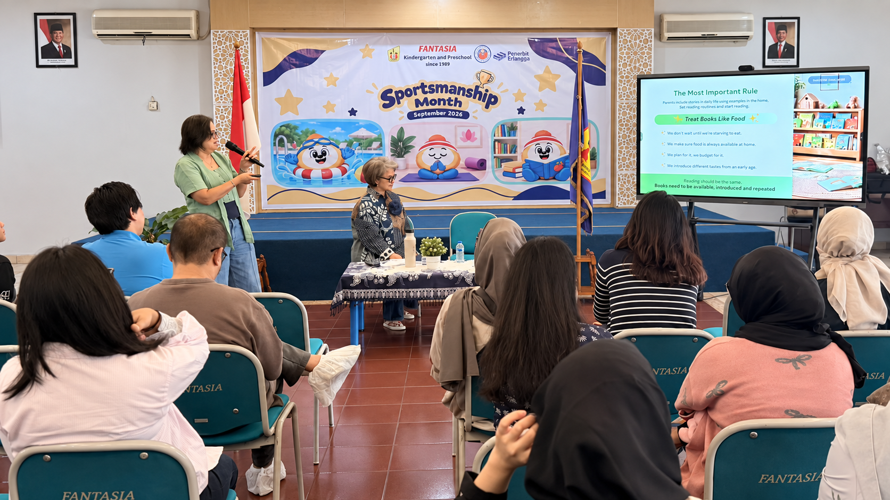
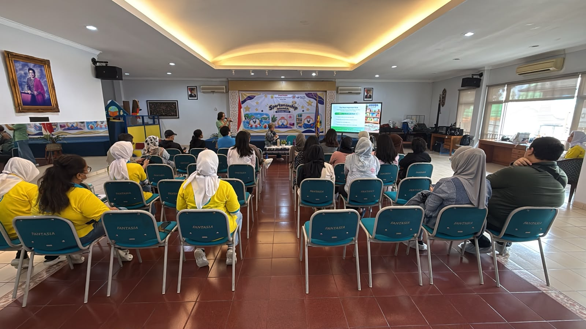
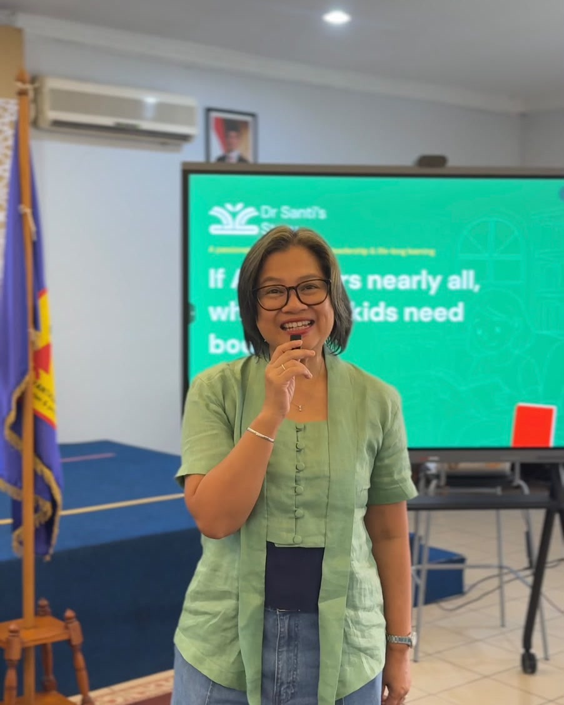
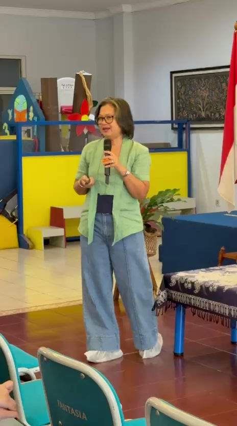
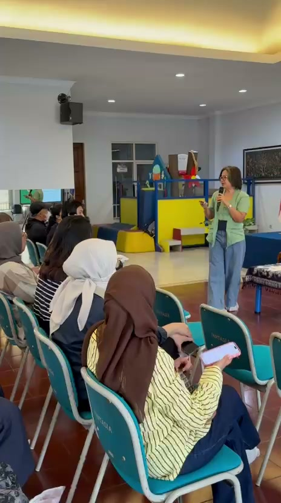

Early literacy
How children meet language, pictures, stories, and books long before reading feels like a skill.
Fantasia · 12 September 2026
A warm parenting session with Fantasia Kindergarten and Preschool on early literacy, shared stories, and the role of parents as a child’s first reading role model.

A shared conversation
At Fantasia, Dr Santi met with parents to explore what literacy can mean in a young child’s everyday life. The session returned to a simple truth: reading habits often begin at home, through the time, language, and attention that parents share with their children.
Rather than treating reading as a task to complete, the conversation made room for stories as meaningful quality time—an invitation to be curious together, listen closely, and let books become familiar companions.




What we explored
Small ideas for making early literacy feel close, meaningful, and shared.
How children meet language, pictures, stories, and books long before reading feels like a skill.
How everyday acts of reading can show children that books have a place in family life.
How shared reading can become a gentle moment of attention, conversation, and connection.
From the day
The documentation is grounded in the event reflections shared by Fantasia Kindergarten and Preschool and Dr Santi’s Story.